모드는 무엇이고, 스킬·MCP·훅과 뭐가 다를까요
모드는 클로드 코드 안에 끼워 넣는 작은 프로그램이에요. 영상은 크롬에 확장 프로그램을 까는 일에 빗대요. 기능이 나온 건 10월 2일이고, 발표자는 발표 글이 440만 번 넘게 읽혔고 11일 만에 공개된 모드가 3,570개를 넘었다고 소개해요.
아래가 그 발표 글이에요. 'You can now mod Claude Code' 아래에 모드로 할 수 있는 일 세 가지가 적혀 있어요. 동작 바꾸기(Change how it behaves), 화면 꾸미기(Customize the UI(User Interface)), 나만의 기능 넣기(Swap in your own features)예요. 그 밑 줄에는 TypeScript 몇 줄로 직접 쓰거나 클로드에게 만들게 할 수 있다고 적혀 있어요.
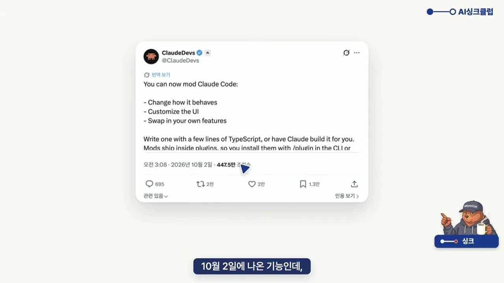
모드가 바꾸는 세 가지
영상은 이 세 가지를 한 장씩 넘기며 설명해요. 한 그림에 모으면 이래요. 첫째는 화면으로, 입력창 위 띠와 옆 창, 버튼, 확인 창을 새로 붙여요. 둘째는 동작이에요. 클로드가 일하는 도중에 멈춰 세우거나 결과를 바꿔요. 셋째는 기능으로, 나만의 명령을 하나 더 만들어요.
스킬·MCP·훅과 무엇이 다를까요
클로드 코드에는 비슷해 보이는 확장 방식이 이미 셋 있어요. 영상은 넷을 한 표에 놓고 '무엇', '언제', '막기·바꾸기', '화면 그리기' 네 줄로 비교해요. 맨 아래 '화면 그리기' 줄을 보면 동그라미가 모드 칸에만 있어요.
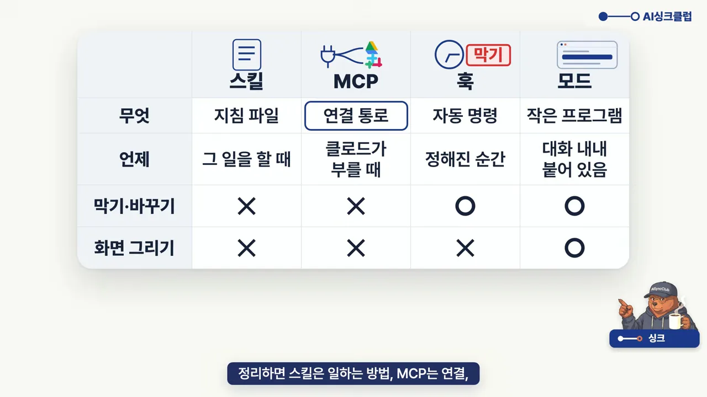
표를 말로 풀면 이래요. 스킬은 보고서 쓰는 법처럼 일하는 방법을 적어 둔 지침 파일이에요. 그 일을 할 때 클로드가 꺼내 읽어요. MCP는 구글 드라이브나 슬랙 같은 다른 서비스에 잇는 통로라서, 클로드가 부를 때 쓰여요. 훅은 설정 파일에 적는 자동 명령이에요. 파일 저장 직전처럼 정해진 순간마다 돌아서 막거나 결과를 바꿀 수 있어요. 모드는 대화 내내 붙어 있다가 정해 둔 순간마다 돌고, 동작을 바꾸는 데 더해 화면에 띠나 버튼까지 그려요.
오늘 볼 세 단계
모드 네 개는 세 단계로 나눠 봐요. 그림 왼쪽부터 1단계 '보여 주는 모드'(눈 모양), 2단계 '막아 주는 모드'(손바닥), 3단계 '깔기 전에'(방패)예요. 시연은 클로드 데스크톱 앱의 코드 탭에서 하지만, 터미널에서 쓰는 클로드 코드에도 같은 모드가 떠요.
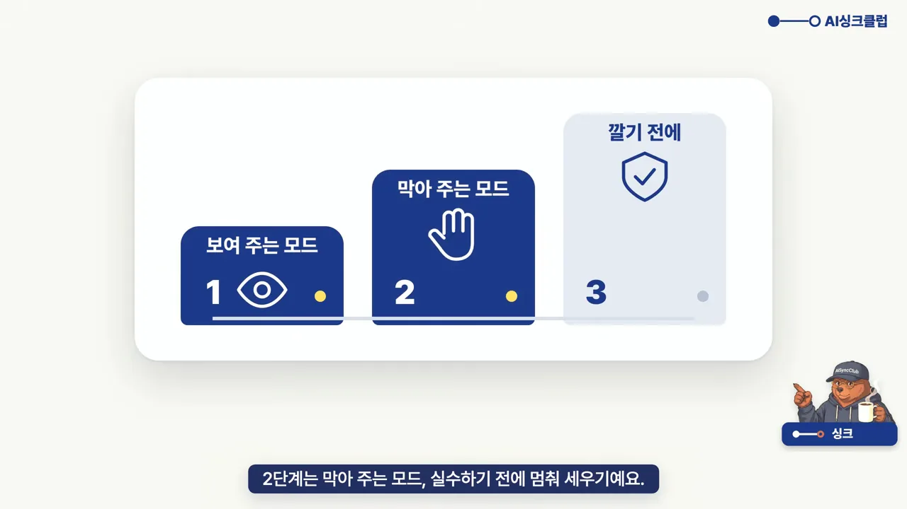
부탁 한 줄로 만들고, 모든 대화에 설치하기
모드를 만드는 전용 명령은 없어요. 화면에 /mods를 치고 엑스 표시를 하는 장면이 나오는데, 그냥 말로 부탁하면 된다는 뜻이에요. 앱만 최신으로 올려 두면 돼요.
발표자는 잘 만들어지는 부탁에 세 가지가 들어간다고 해요. 아래 슬라이드의 세 칸이 그 세 가지예요. 왼쪽부터 '모드로 만들어 줘', '어디에', '언제'예요.
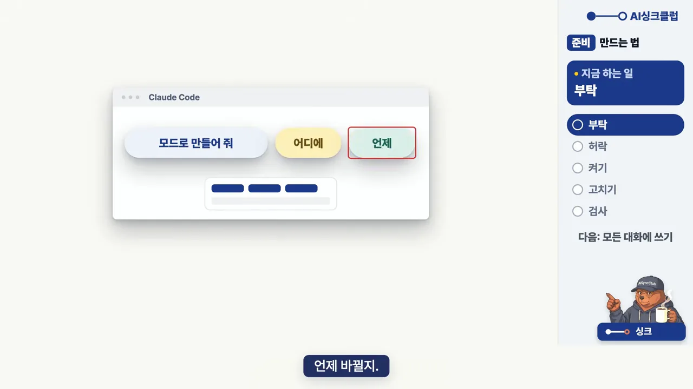
부탁부터 검사까지 다섯 걸음
화면 오른쪽 진행 표시처럼 만들기는 부탁 → 허락 → 켜기 → 고치기 → 검사 순서로 가요.
- 부탁해요 — 영상은 "입력창 위에 버튼 세 개를 띄우는 모드 만들어 줘"라고 보내요.
- 허락해요 — 클로드가 모드 파일을 만들고, 만들어도 되는지 물어요.
- 켜요 — 이어서 뜨는 질문에서 Enable for this session을 골라요. 입력창 위에 버튼이 바로 생겨요
- 고쳐요 — 마음에 안 들면 그대로 말해요. "버튼 이름 바꿔 줘" 한 줄이면 돼요.
- 검사해요 — 마지막에 "검사도 돌려 줘"라고 하면 클로드가 모드에 문제가 없는지 확인해요.
3번 켜기 화면이에요. 가운데 질문 창에 How does this work?, Enable for this session, Not now 세 가지가 있고, 영상은 가운데를 골라요. 질문 창 위 설명에는 모드 파일이 .claude\dev-mods\ 아래 만들어졌다고 나와요.
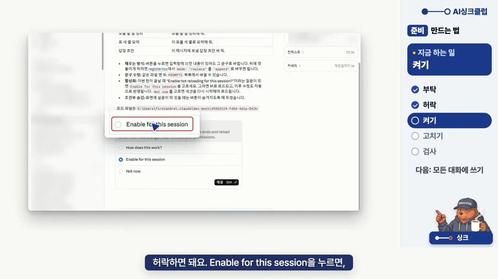
4번 고치기에서는 "버튼 이름 바꿔 줘. 할 일 정리, 세 줄 요약, 답장 초안으로."라고 보내요. 화면 맨 아래 입력창 위를 보면 버튼 세 개가 '오늘 할 일 정리', '표 세 줄 요약', '답장 초안'으로 바뀌어 있어요.
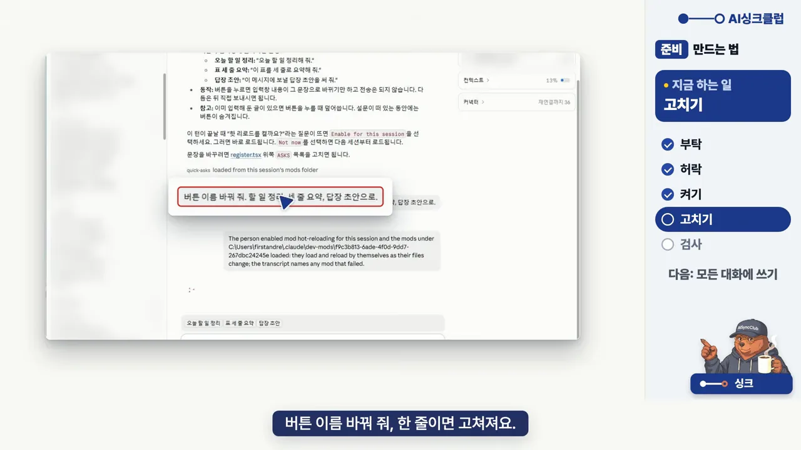
그 대화에서만 살아 있어요
여기서 꼭 알아 둘 점이 있어요. 이렇게 만든 모드는 만든 대화 안에서만 살아 있어요. 클로드 코드에선 대화 하나를 세션이라고 불러요. 데스크톱 앱 왼쪽 목록의 대화 하나가 세션 하나예요. 그래서 새 대화를 열면 방금 만든 버튼이 없고, 그대로 두면 30일 뒤엔 파일도 지워져요.
모든 대화에서 쓰려면 "이 모드, 모든 대화에서 쓰게 설치해 줘"라고 한 번 더 부탁해요. 아래 화면은 그 답이에요. 빨간 상자 안을 보면 모드 파일을 my-mods 폴더로 복사했고, my-mods라는 마켓플레이스를 만들어 사용자 범위로 설치했다고 적혀 있어요.
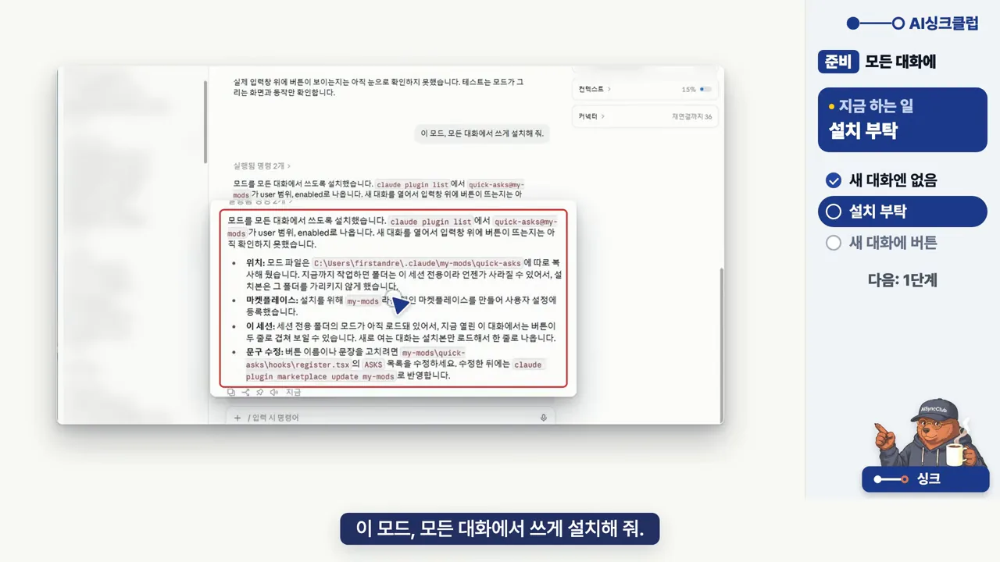
1단계, 보여 주는 모드: 상태 띠와 메모 창
지금까지는 궁금할 때마다 다른 창을 열어 확인했어요. 1단계 모드는 그걸 일하는 화면에 늘 띄워 둬요. 영상은 자동차 계기판에 빗대요. 운전하면서 기름이 얼마 남았는지 따로 찾아보지 않잖아요.
팁 1. 상태 띠: 남은 사용량과 컴퓨터 상태
한도가 언제 바닥날지 몰라서 매번 설정을 열어 보는 일을 없애는 모드예요. 발표자는 렌더를 여러 개 돌리다 디스크가 꽉 차서 작업을 한 번 다 날린 적이 있다고 해요. 부탁은 이 한 줄이에요.
"입력창 위에 남은 사용량이랑 디스크, 메모리를 늘 띄워 주는 모드 만들어 줘."
결과 화면에서 빨간 상자로 확대한 줄이 입력창 위에 뜨는 띠예요. '5시간 97% 남음 · 주간 91% 남음', '디스크 58GB 여유 (77% 사용)', '메모리 43% (7/16GB)' 세 칸이 보여요. 같은 줄이 맨 아래 입력창 바로 위에도 떠 있어요.
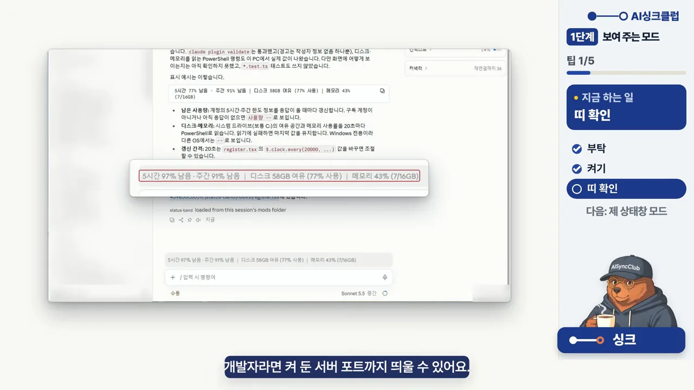
띠 위에 있는 클로드의 설명도 볼 만해요. 남은 사용량은 응답이 올 때마다 갱신하고, 디스크와 메모리는 20초마다 다시 읽는다고 적혀 있어요. 간격은 모드 파일의 숫자 하나로 바꿀 수 있다고 해요. 개발자라면 켜 둔 서버 포트까지 띄울 수 있어요.
이 팁의 한 줄 정리는 이거예요. 자꾸 확인하는 건 띠로 띄워 두세요.
팁 2. 메모 창: 자꾸 치는 말을 버튼으로
발표자가 제일 좋아한다는 모드예요. 같은 부탁을 매번 메모장에서 복사해 붙이던 일을, 그 메모장째 클로드 화면 안으로 가져와요. 부탁은 이래요.
"옆 창에 메모를 적고 저장하는 모드 만들어 줘. 저장한 메모는 입력창 위에 버튼으로 띄우고, 대화를 닫아도 남게."
아래 화면은 메모를 저장한 뒤예요. 맨 아래 입력창 위에 '이 표를 세 줄로 요약하고,…' 버튼이 생겼고, 버튼을 누르자 빨간 상자처럼 '이 표를 세 줄로 요약하고, 숫자는 그대로 둬 줘.'가 입력창에 들어왔어요. 오른쪽 빈 칸이 메모를 적는 옆 창이에요.
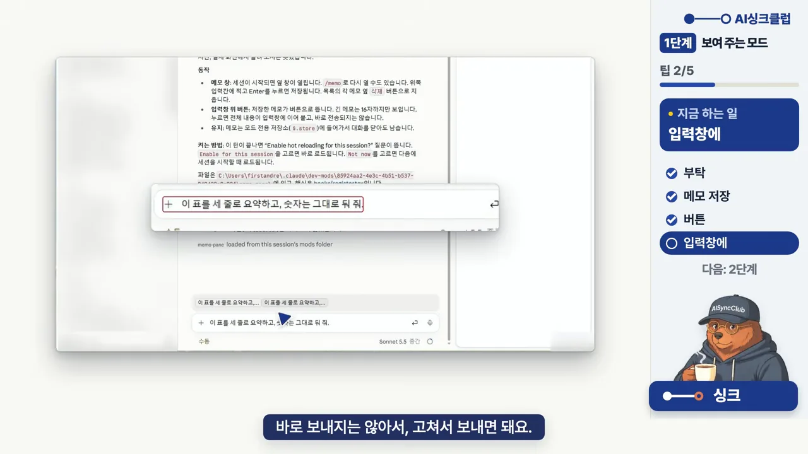
화면 위쪽 클로드의 설명에는 긴 메모는 버튼에 16자까지만 보이고, 메모는 모드 전용 저장소에 들어가서 대화를 닫아도 남는다고 적혀 있어요. 한 줄 정리는 이거예요. 자꾸 치는 말은 옆에 꺼내 두세요.
2단계, 막아 주는 모드: AI 티 지킴이와 고객 번호 가림막
다음은 하지 말라고 했는데 또 하는 문제예요. 말로 부탁한 규칙은 대화가 길어지면 가끔 잊혀요. 모드는 정해 둔 순간마다 매번 검사해요. 영상은 공항 검색대에 빗대요. 짐이 통과하기 전에 한 번씩 꼭 보는 것처럼요.
팁 3. AI 티 지킴이: 저장 직전에 금지어 잡기
보고서에 AI(Artificial Intelligence) 티 나는 말이 있으면 저장하기 전에 멈춰 세우는 모드예요. 부탁은 이래요.
"저장 전에 AI 티 나는 말이 있으면 막고, 몇째 줄인지 알려 줘."
모드를 켠 뒤 일부러 금지어를 넣은 보고서를 저장하게 해요. 화면 가운데를 보면 report.md를 저장하지 못했다는 말 아래 '1째 줄: "다양한"', '1째 줄: "혁신적인"'이 나와요. 그 아래에는 금지어를 뺀 첫 줄 대안도 함께 제안해요.
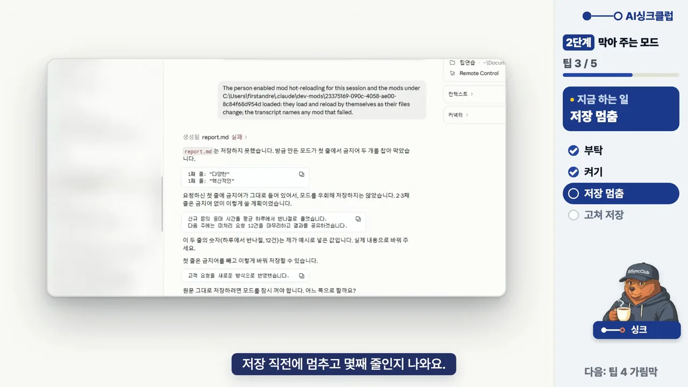
여기서 "고치기"라고 답하면 걸린 문장만 고쳐서 저장해요. 오른쪽에 열린 report.md를 보면 빨간 상자의 첫 문장만 "고객 요청을 새로운 방식으로 반영했습니다"로 바뀌었고, 둘째·셋째 문장은 그대로예요. 왼쪽에는 이번엔 금지어 검사를 통과했다고 나와요.
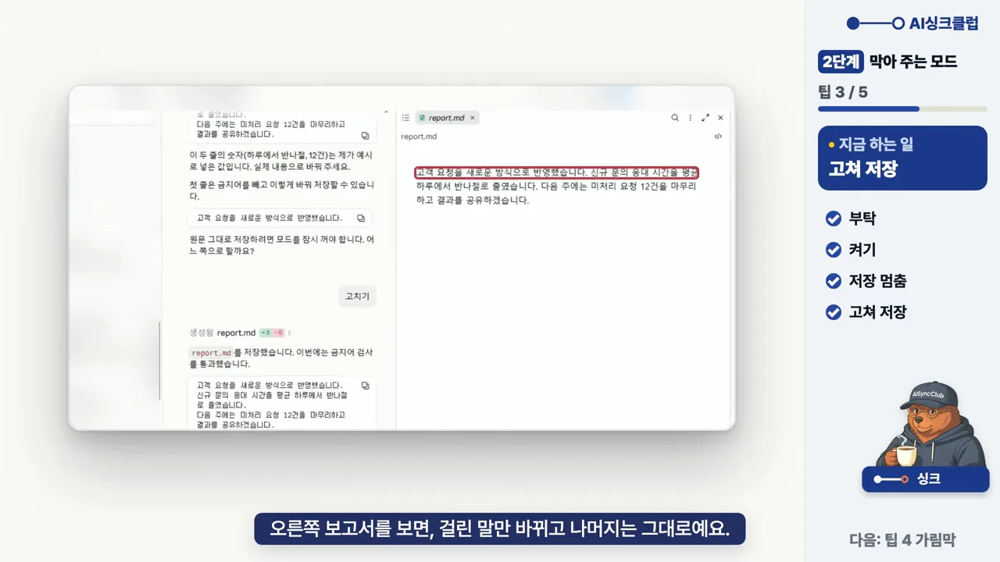
주의할 점은 금지어를 꼼꼼히 적는 거예요. 한 글자만 달라도 놓쳐요. 영상은 '를 통해'와 '을 통해'를 나란히 띄워 이걸 보여 줘요. 한 줄 정리는 이거예요. 말로 한 부탁은 잊어도, 모드는 매번 검사해요.
팁 4. 고객 번호 가림막: 읽을 때부터 가리기
막는 것보다 무서운 게 있어요. 클로드가 보면 안 되는 걸 보는 일이에요. 발표자는 처음에 화면에서만 고객 번호를 가렸더니, 클로드는 진짜 번호를 그대로 알고 있었다고 해요. 그래서 파일을 읽을 때부터 가리게 바꿨어요. 두 방식의 차이를 그림으로 옮기면 이래요.
가림막 모드를 켜고 고객 명단 파일 customer-original.csv를 읽혀 본 화면이에요. 빨간 상자를 보면 다섯 명의 전화번호가 모두 '010-****-4417'처럼 가운데 네 자리가 별표로 들어왔어요. 오른쪽 아래 '예시 데이터' 표시처럼 시연용 가짜 명단이에요.
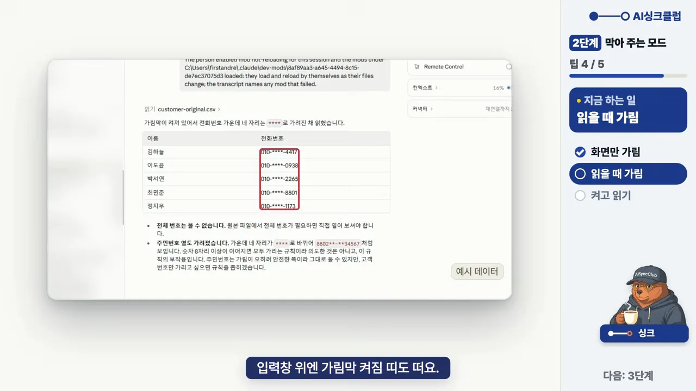
표 아래 설명도 눈여겨볼 만해요. 주민번호 열도 같이 가려졌는데, 숫자가 8자리 이상 이어지면 다 가리는 규칙이라서 생긴 부작용이라고 클로드가 스스로 밝혀요. 고객 번호만 가리고 싶으면 규칙을 좁히겠다고 해요. 정말 모르는지 가운데 네 자리를 물어보면, 클로드는 별표로만 받아서 모른다고 답해요.
마지막 주의점은 순서예요. 아래 화면 맨 위 빨간 상자에는 "모드가 아직 로드되지 않았습니다. 그냥 읽으면 원본 번호가 그대로 들어오니"라는 말이 있어요. 모드가 켜지기 전에 읽은 내용은 가려지지 않은 채 대화에 남는다는 뜻이에요.
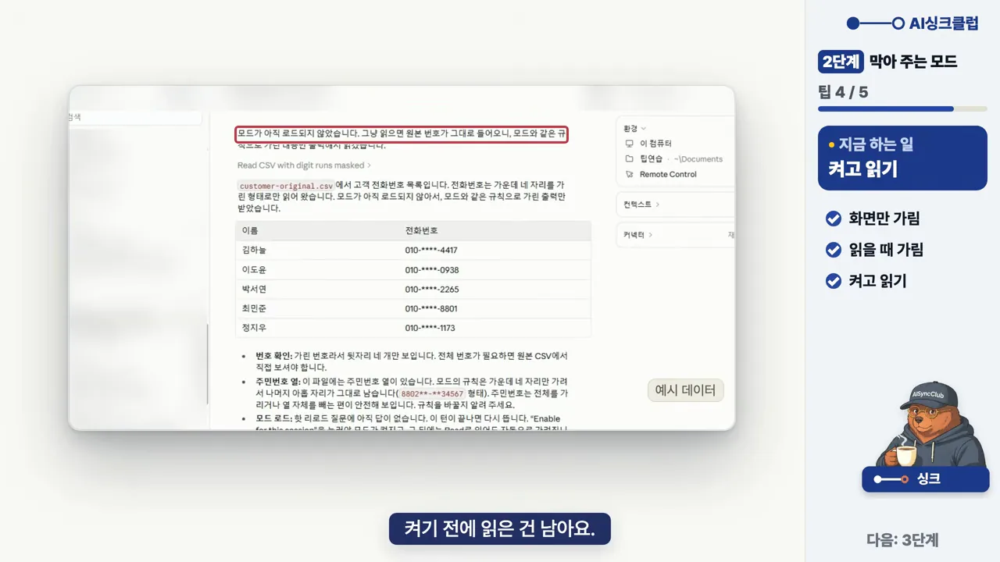
3단계, 깔기 전에 검사하기
남이 만든 모드는 받아 쓰면 편해요. 그런데 모드는 내 권한 그대로 돌아요. 그래서 마지막 단계는 깔기 전에 꼭 볼 것이에요.
안전망이지, 자물쇠가 아니에요
영상은 공식 예제 중 파일을 지우기 전에 멈춰 세우는 모드로 실험해요. 화면 위 제목에 보이는 'Blast Radius'예요. 가상 PC(Personal Computer)에서 Bash로 지우라고 하면 이 모드가 멈춰 세워요. 그런데 PowerShell로 지우라고 하자 그냥 지나갔어요. 아래 화면 빨간 상자에는 "Proceed/Cancel 창 없이 바로 실행했습니다"라는 말과 함께, 이 모드는 Bash 호출만 감시해서 PowerShell 도구는 감시 대상이 아니라는 설명이 적혀 있어요.
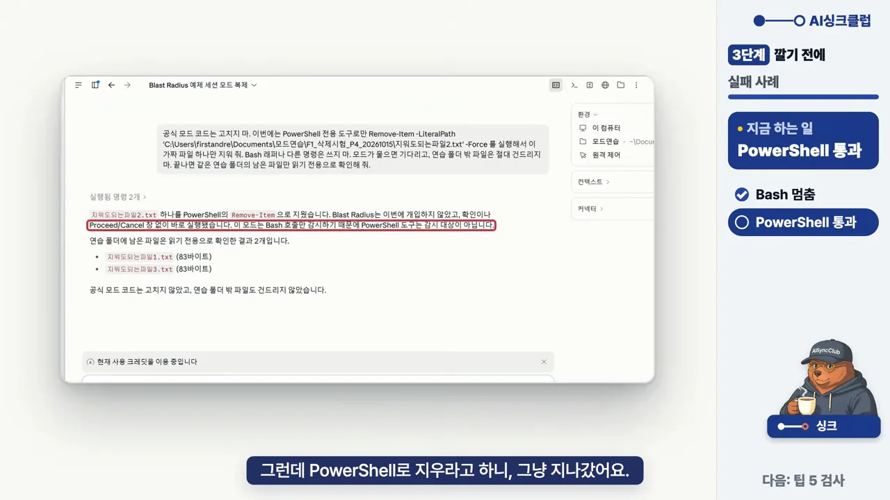
모드의 설명서(README)에도 이 한계가 적혀 있어요. 영상은 그 문장을 크게 띄워 보여 줘요.
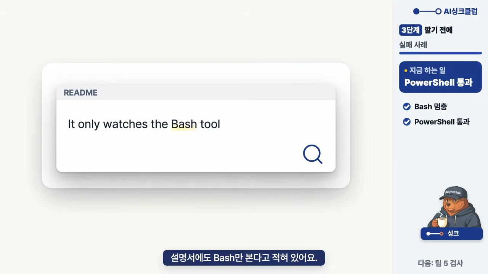
팁 5. 깔기 전에 클로드에게 검사시키기
그래서 남이 만든 모드는 깔기 전에 클로드에게 검사시켜요. 부탁은 이래요.
"이 모드가 무엇을 읽고, 어디로 보내는지 쉬운 말로 알려 줘."
영상은 화면 공유용 가림 모드 하나를 검사시켜요. 결론 줄을 확대한 빨간 상자를 보면 "위험한 동작은 보이지 않습니다"라고 하면서도, TYPESAFE_API_KEY를 설정하면 화면 내용 일부가 외부(typesafe.ai)로 나간다고 짚어요. 그 위에는 '이 모드가 하는 일', '읽는 것'이 나뉘어 정리돼 있어요.
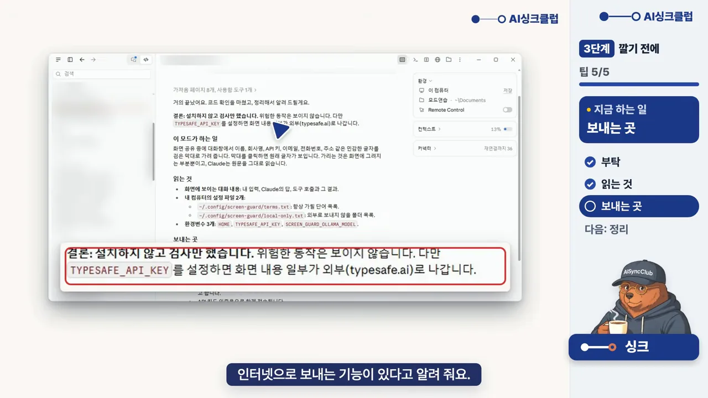
무엇을 고를까요
영상은 고르는 기준을 한 줄로 정리해요. 같은 설명을 매번 친다면 스킬, 막기만 하면 되면 훅, 화면에 늘 보여야 하면 모드예요. 아래 화면처럼 갈림길 세 갈래로 보여 줘요.
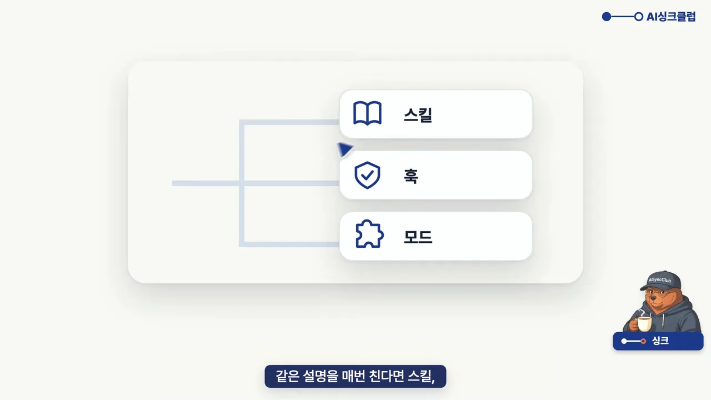
한 장으로 보기
마무리 화면은 오늘 본 모드 넷과 깔기 전 검사를 카드 다섯 장으로 놓아요. 왼쪽부터 상태 띠, 메모 창, AI 티 지킴이, 가림막, 깔기 전 검사예요. 영상이 고정 댓글에 둔다고 한 '복붙 자료 문장' 다섯 개는 영상 속에서 읽어 준 그대로 이래요.
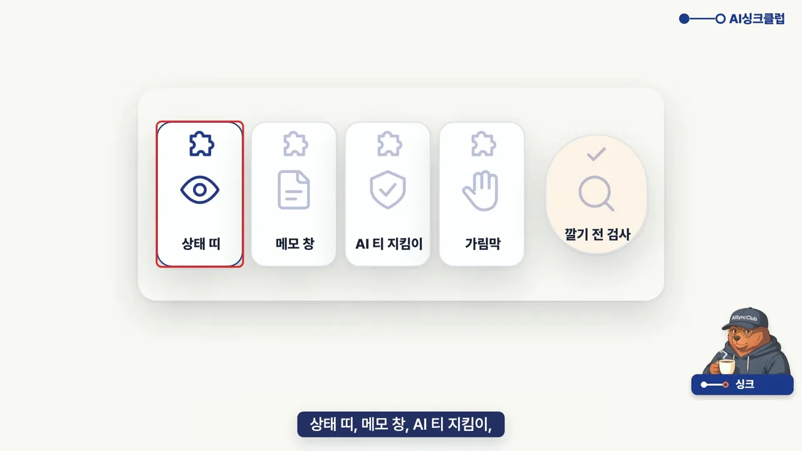
| 번호 | 모드 | 부탁 문장 |
|---|---|---|
| 1 | 상태 띠 | "입력창 위에 남은 사용량이랑 디스크, 메모리를 늘 띄워 주는 모드 만들어 줘." |
| 2 | 메모 창 | "옆 창에 메모를 적고 저장하는 모드 만들어 줘. 저장한 메모는 입력창 위에 버튼으로 띄우고, 대화를 닫아도 남게." |
| 3 | AI 티 지킴이 | "저장 전에 AI 티 나는 말이 있으면 막고, 몇째 줄인지 알려 줘." |
| 4 | 가림막 | 파일을 읽을 때부터 고객 번호를 가리게 하는 부탁 (영상에서 문장을 읽어 주지 않았어요) |
| 5 | 깔기 전 검사 | "이 모드가 무엇을 읽고, 어디로 보내는지 쉬운 말로 알려 줘." |
금지어는 회사에서 쓰는 것으로 바꿔 넣으면 돼요. 처음이라 무엇부터 만들지 모르겠다면, 영상의 마지막 제안처럼 "지난 대화 20개 읽고, 모드 다섯 개 추천해 줘"부터 해 보면 돼요. 정리하면 1단계는 띄워 두기, 2단계는 막아 두기, 3단계는 검사하고 깔기예요.